Ingeniero Multimedia
Diseño interfaces, sistemas de señalética y experiencias 3D — donde la investigación y la estética trabajan juntas para resolver problemas reales.
Análisis y UX Research
UI & Prototipos
Estructura y Flujos
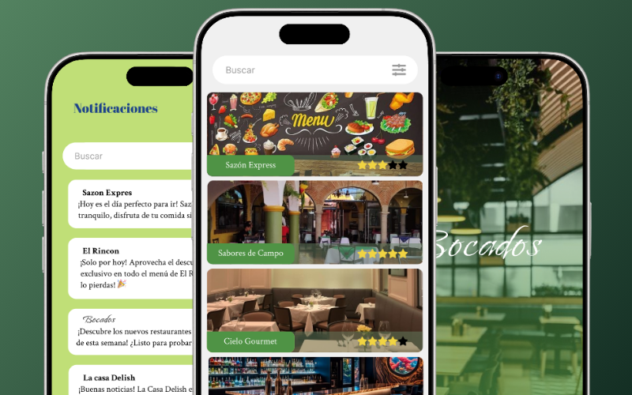
App Móvil
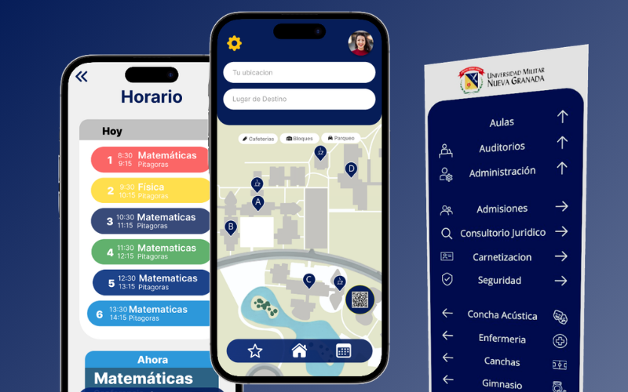
App Móvil | Wayfinding UX
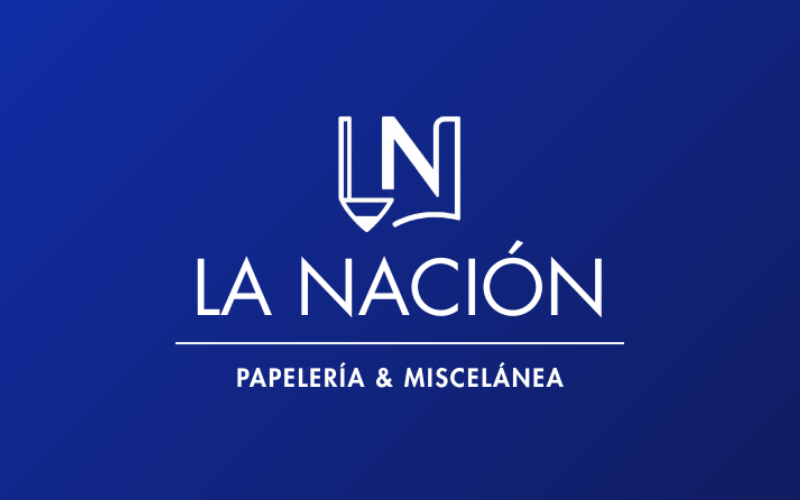
Branding físico y Digital
Explora este modelo 3D directamente en tu espacio físico. Desde un dispositivo móvil, presiona el botón Ver en tu espacio para activar la cámara y colocar el modelo en el mundo real.
Toca el botón AR que aparece en el visor para activar la cámara y colocar el modelo en tu espacio real mediante WebXR / Scene Viewer / Quick Look.
Interactúa con el modelo 3D usando el mouse: rota, aleja y explora. El botón AR está disponible en dispositivos con soporte WebXR.
Tecnología: Implementado con <model-viewer> de Google, con soporte nativo para WebXR (Android Chrome), Scene Viewer y Quick Look (iOS Safari).
Diseño de una app para explorar restaurantes y descubrir nuevas experiencias gastronómicas.
Sistema de señalética integral que combina app móvil con pantallas táctiles y señalización física dentro del campus UMNG.
Branding completo y diseño de logotipo para una papelería y miscelánea.
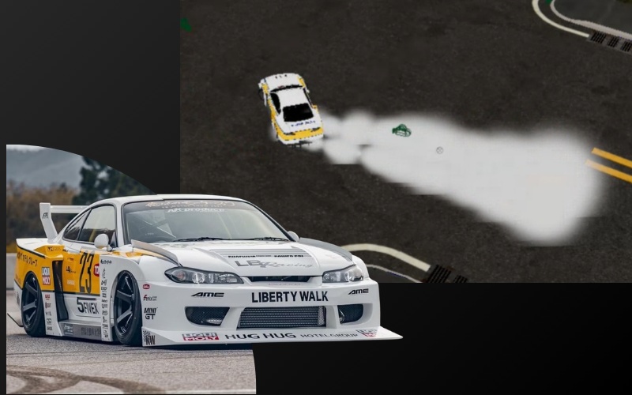
Simulación 3D del humo de un carro derrapando, con fundamentos físicos aplicados en Maya.
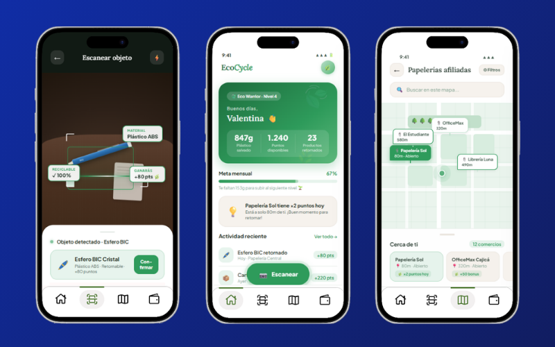
App para fomentar la economía circular mediante la gamificación del escaneo de productos reciclables en papelerías afiliadas.
El proyecto combina modelado modular, materiales PBR y un estilo visual estilizado, buscando equilibrio entre realismo y arte.
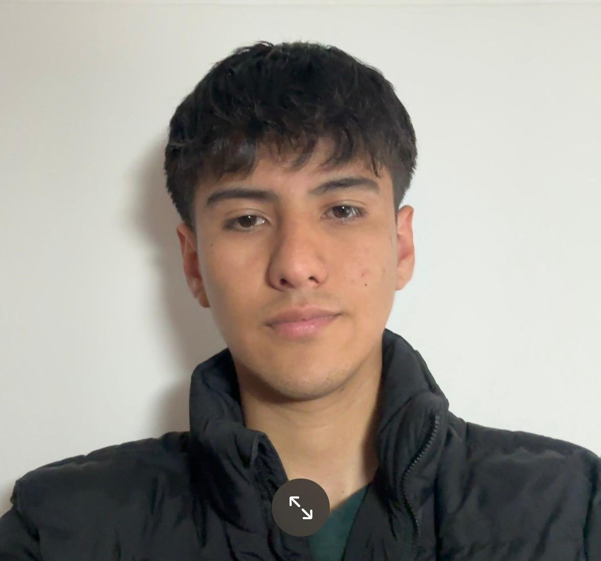
Ingeniero Multimedia
Soy estudiante de Ingeniería Multimedia con interés en el diseño de experiencias digitales y la construcción de soluciones visuales claras y funcionales. Me enfoco en combinar estructura, estética y pensamiento estratégico en cada proyecto.
Actualmente, estoy fortaleciendo mis habilidades en jerarquía visual y en argumentación de decisiones de diseño para profundizar y defender mejor cada solución propuesta.
Estoy disponible para nuevas oportunidades. ¡Hablemos!
o envíame un mensaje a través del formulario.
App móvil diseñada para acabar con la indecisión gastronómica en grupo mediante exploración visual intuitiva.
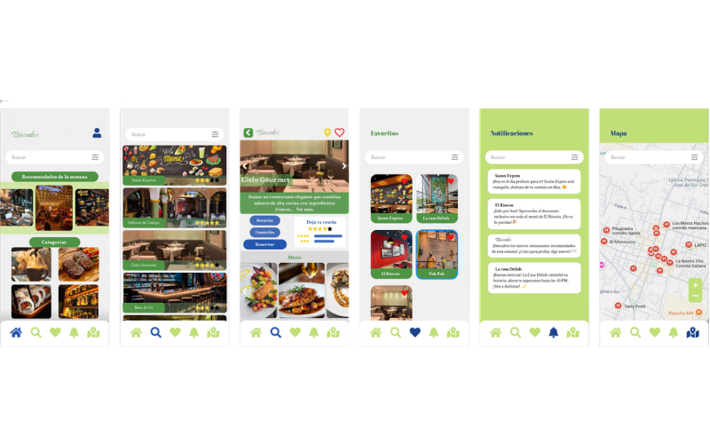
Sistema de navegación integrado para el campus de la UMNG: app móvil, señalización física y kioscos táctiles.
El diseño de experiencia no termina en el borde del teléfono; debe vivir en el entorno físico del usuario.
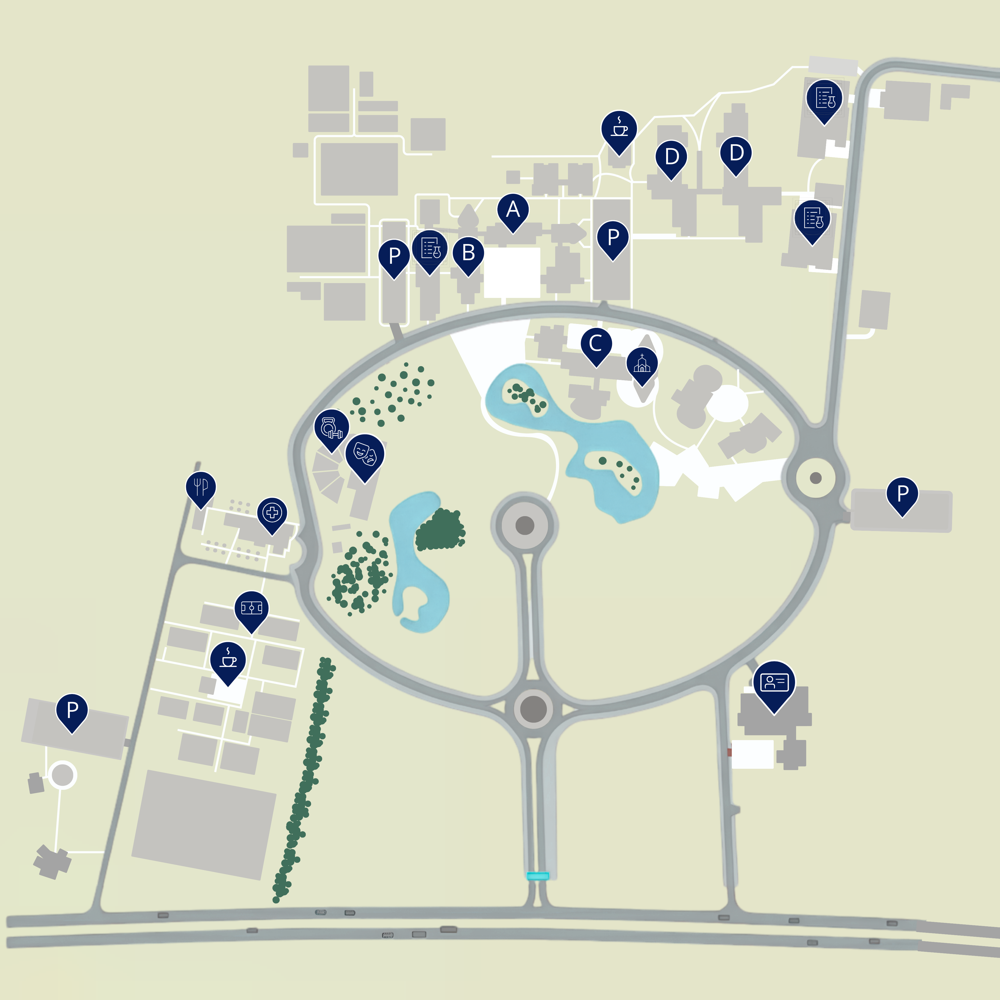
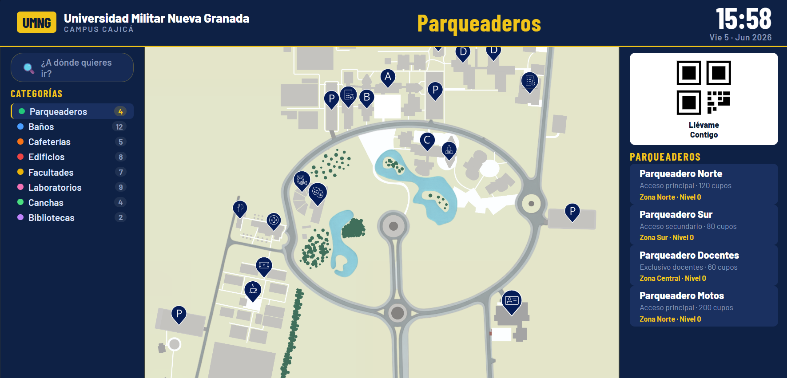
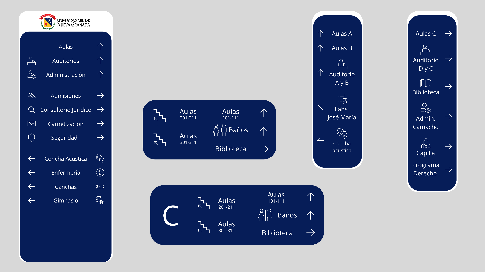
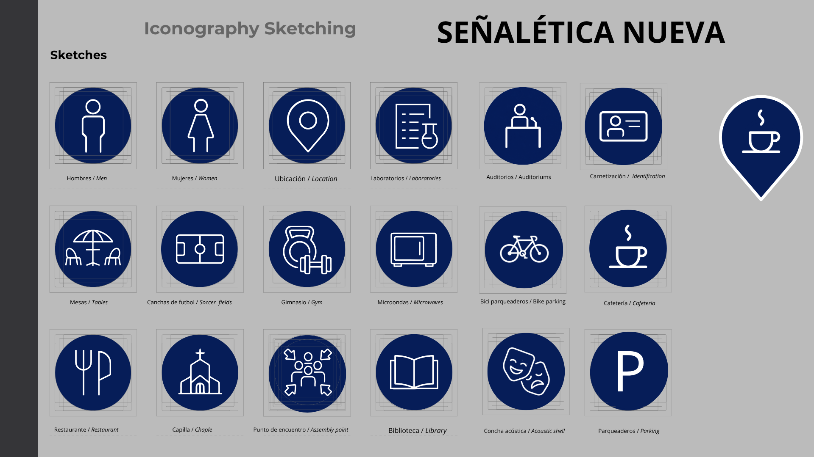
Rebranding completo para una papelería tradicional, modernizando su imagen sin perder la cercanía con su clientela local.
Se definió una paleta cromática CMYK altamente contrastante para garantizar que los impresos físicos (volantes, bolsas) mantuvieran la misma fuerza que los post de Instagram.
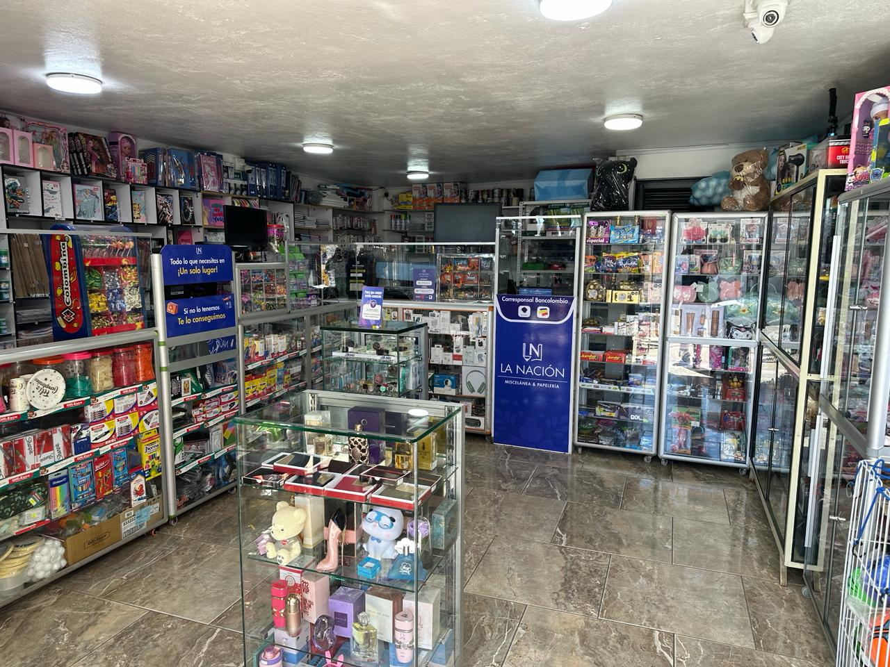
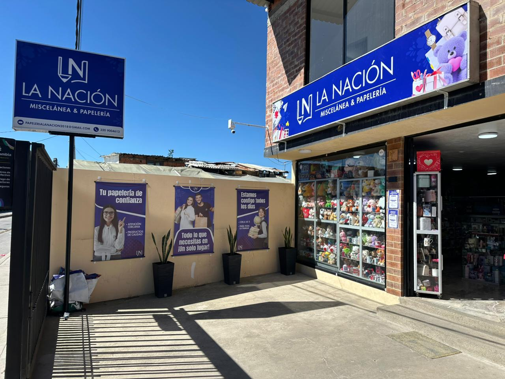
Simulación física avanzada de la disipación del humo generado por la fricción de un neumático derrapando.
Gamificando la economía circular: escanea productos reciclables en papelerías afiliadas y obtén recompensas.
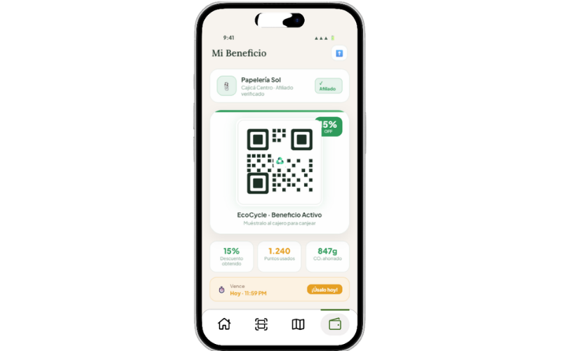
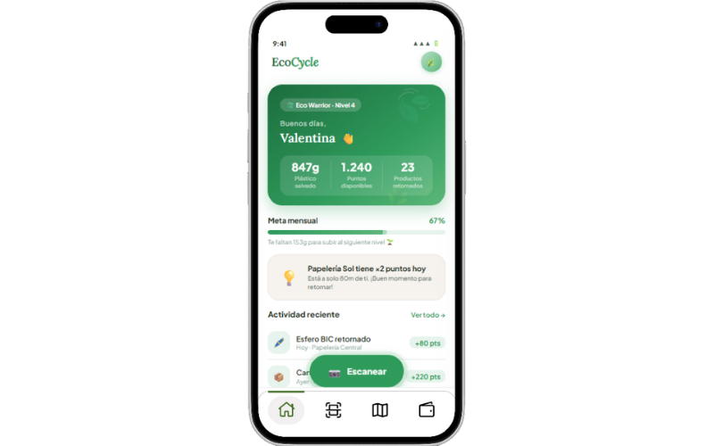
Diorama 3D estilizado aplicando flujos de trabajo de videojuegos: modelado modular y texturizado PBR.
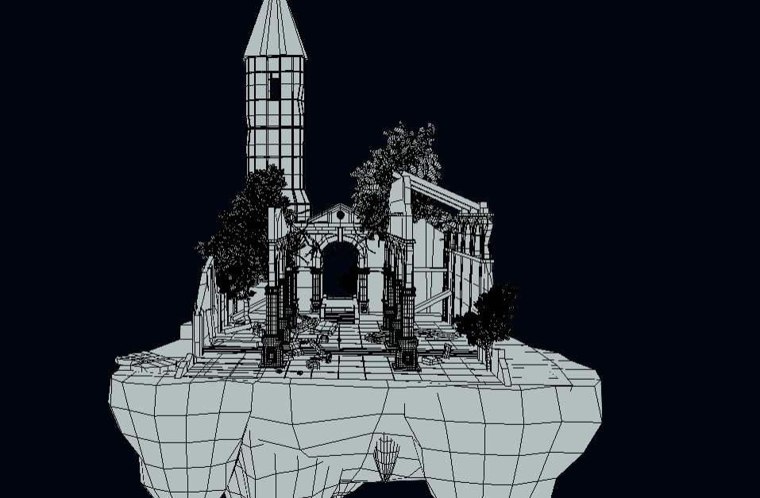
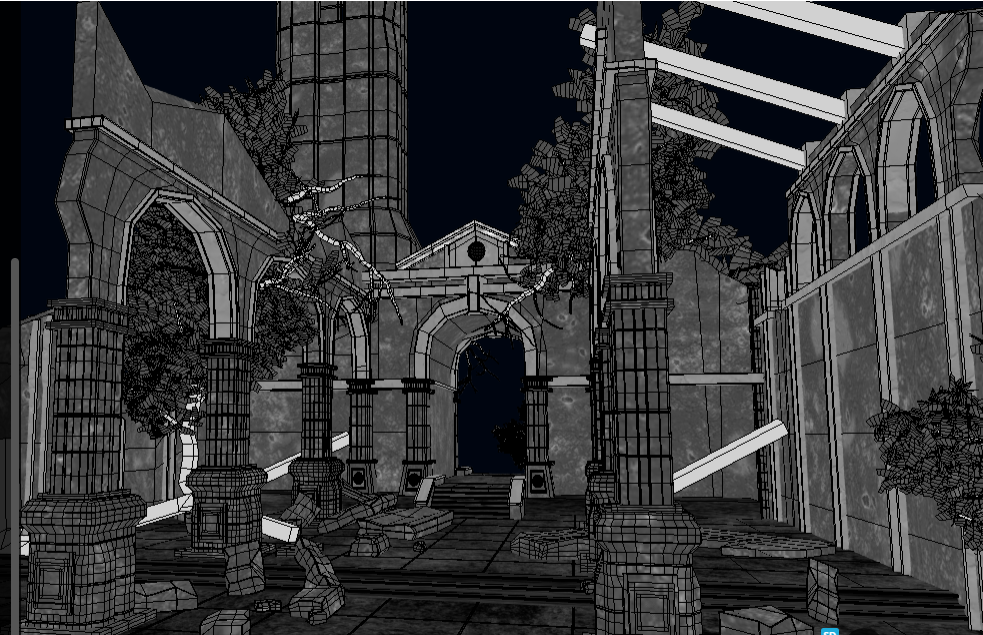